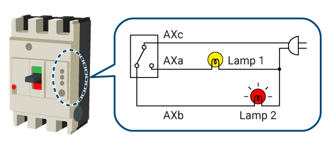

Low-voltage Circuit BreakersAccessories and Related Components

Alarm Switch (AL)
When a circuit breaker is tripped, an alarm triggers by means of a lamp, buzzer, or other signal.
Auxiliary Switch (AX)
The circuit breaker’s operating status is indicated by a lamp, buzzer, or other signal.
- When the circuit breaker is on: Lamp 1 lights up (AXa is closed).
- When the circuit breaker is off or tripped: Lamp 2 lights up (AXb is closed).

Shunt Trip (SHT)
The circuit breaker can be electrically tripped from a distance.
- The SHT coil is excited and the shunt trip device is drawn in, which trips the circuit breaker.
Undervoltage Trip (UVT)
The circuit breaker can be tripped when the circuit voltage drops to 70-20% of the rated voltage.
- Turning the device on is not possible during a power outage.